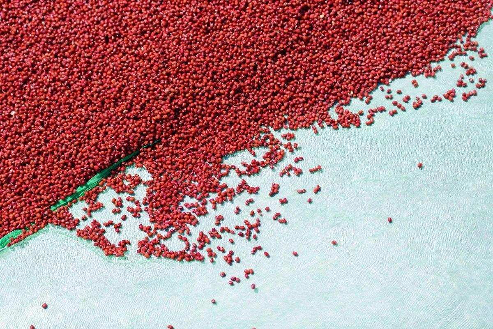
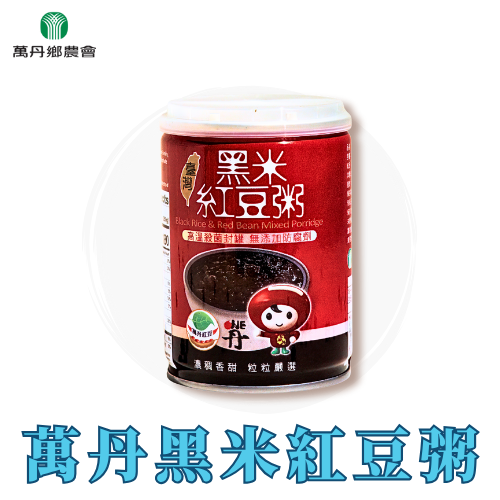

品牌故事
在地風土 · 共好加工 · 自然風味
萬丹鄉位於屏東平原南部，土地平闊，地質肥沃，水利充足，人民富裕，在本縣是生活水準頗高的地方，地形主要以平原為主，肥沃的土壤和豐沛的地下水源，使本鄉成為屏東縣境內的農產之鄉

產地風景 / 品牌日常
土地平闊，地質肥沃，水利充足，人民富裕
萬丹鄉位於屏東平原南部，土地平闊，地質肥沃，水利充足，人民富裕，在本縣是生活水準頗高的地方，地形主要以平原為主，肥沃的土壤和豐沛的地下水源，使本鄉成為屏東縣境內的農產之鄉
在地風土 · 共好加工 · 自然風味
萬丹鄉位於屏東平原南部，土地平闊，地質肥沃，水利充足，人民富裕，在本縣是生活水準頗高的地方，地形主要以平原為主，肥沃的土壤和豐沛的地下水源，使本鄉成為屏東縣境內的農產之鄉

嚴選台灣萬丹紅豆泥，非基改無添加，安全健康，風味濃郁純粹。
$38 · 300ml/罐

富膳食纖維與花青素及多種微量元素，紅豆黑米香濃甜綿，濃稠鬆軟，冰熱飲皆適宜。
$38 · 250g/罐